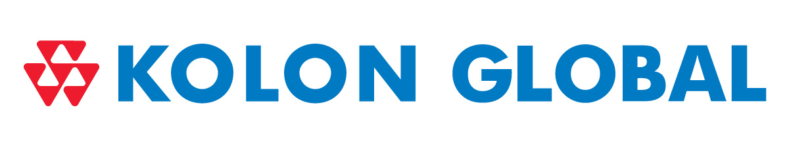

home > 회사소개 > CI소개
CI

- 심볼마크
-
人和(인화), 家和(가화), 心和(심화)의 정신과
코오롱의 심볼마크는 정확한 균형과 조화로 이루어진 7개의 양각 삼각형과 3개의 음각 삼각형이 큰 삼각형 3개와 작은 음각 삼각형 3개를 보여주면서 전체적으로 음, 양의 조화를 이룬 유기적 삼각형태로 되어 있습니다.
코오롱인의 합리성, 적극성, 협동성의 결합을 상징
이것은 코오롱의 人和(인화), 家和(가화), 心和(심화) 정신과 코오롱인의 합리성, 적극성, 협동성의 결합을 상징합니다. -
코오롱의 기업 정신과 경영 이념을 담아낸 CI
합쳐진 2개의 삼각형은 코오롱 영문 이니셜 K를 연상케 하며 구체적으로는 실험실의 프라스크, 건설의 포크레인, 섬유의 조직, 호텔의 안락한 객실, 무역의 선박에 적재된 컨테이너를 상징합니다. 삼각형의 조형적 형태에서 오는 이미지는 산, 성장하는 나무, 거대한 피라미드 그리고 안전, 의지로서의 코오롱의 기업정신과 일치합니다.
- 시그니처
-
CI의 임의적 변형이나 잘못된 사용은 기업의 이미지를 손상시킬 수 있으므로 그 사용에 있어서 제시된 규정에 따라 사용하기 바랍니다.
규정에 어긋난 사용에 대해서는 법적 책임이 있음을 알려드립니다.
- 색상규정
-
주색상
CI 전용 색상은 KOLON BLUE, KOLON RED를 기본으로 합니다. 또한 적용 조건에 따라 여러 가지 보조색상을 사용할 수 있습니다.
-
KOLON BLUE
- PANTONE 300 C
- CMYK 100/45/0/0
- RGB 0/120/195
- HEX #0078C3
-
KOLON BLUE
- PANTONE 485 C
- CMYK 0/100/100/0
- RGB 235/30/45
- HEX #EB1E2D
-
KOLON BLUE
-
보조색상
-
- PANTONE 298 C
- CMYK 0/0/0/100
- RGB 0/0/0
- HEX #000000
-
- PANTONE 298 C
- CMYK 0/0/0/30
- RGB 190/190/190
- HEX #BEBEBE
-
- PANTONE 298 C
- CMYK 75/10/0/0
- RGB 0/175/230
- HEX #00AFE6
-
- PANTONE 874 C
- CMYK 0/100/100/0
- RGB 235/30/45
- HEX #F5911E
-
- PANTONE 874 C
- Gold
-
- PANTONE 874 C
- Silver
-